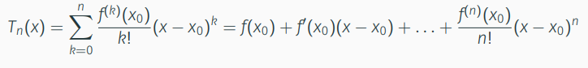

Mathe Klausur
Vorlesung 10: Newton-Verfahren, Taylorpolynom, Kurvendiskussion
Kurvendiskussion
lokales Minimum bzw. Maximum: Die Ableitung am Extrempunkt ist 0.
Wendepunkt ist in der zweiten Ableitung eine Nullstelle.
Geogebra
Newton-Verfahren
Es ist ein Iterationsverfahren zum Berechnen von Nullstellen.
Man braucht:
- Eine Funktion f(x)
- Einen ursprungswert x0
- Die Ableitung der Funktion f`(x)
Bei dem Verfahren rechnet man die Tangente von f(x) bis diese auf der Nullstelle liegt
Formel
xk+1 = xk-(f(xk)/f´(xk))
Jeder durchlauf verdoppelt die Anzahl der richtigen Stellen.
Taylorpolynom
Wir erstellen eine Funktion, welche sich mit jedem durchlauf f(x) immer mehr ähnelt.
Formel

n ist die Anzahl der Durchläufe
x0 ist der start x Wert. Dieser wird immer mit dem ergebnis der letzten Rechnung ersetzt.